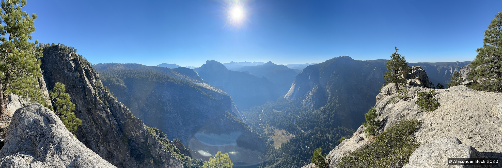
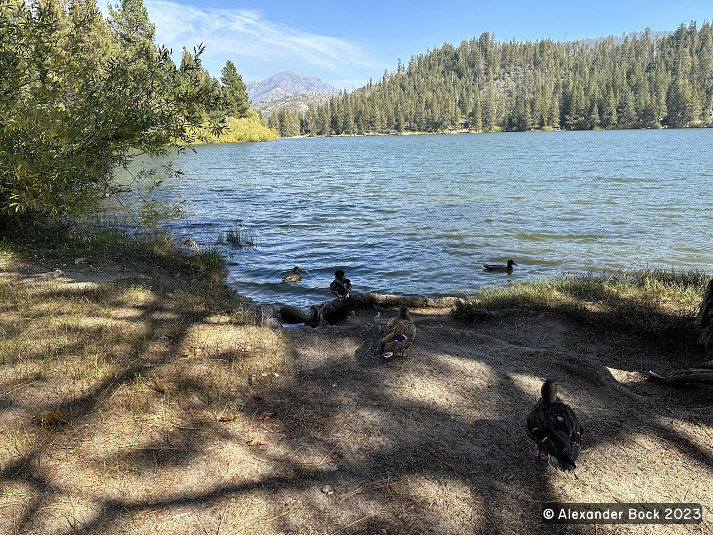
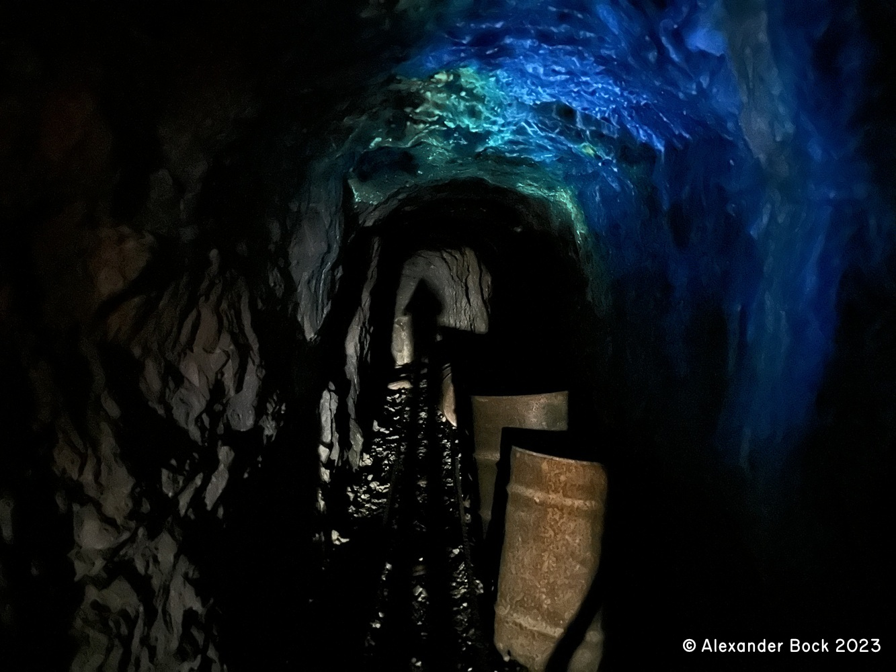

Eastern California Hiking Trip 2023
Alex Bock 2024-03-08
Overview
Over two weeks in October 2023 in the Sierra Nevada mountains and southeastern California, I:
- Hiked Yosemite Falls, Yosemite Point, and Half Dome in Yosemite National Park
- Visited Sequoia and Kings Canyon National Parks
- Visited Lone Pine
- Hiked to the summit of Mount Whitney (the tallest mountain in the contiguous United States) roundtrip in one day
- Visited the Salton Sea
- Explored Joshua Tree National Park
- Visited Big Morongo Canyon Preserve
- Rode the Palm Springs Aerial Tramway and hiked to the summit of Mount San Jacinto
- Made a brief stop in Arizona on the way home and hiked to an abandoned mine containing the fluorescent tungsten mineral scheelite.
Yosemite National Park
Yosemite Falls
Yosemite Point
Half Dome

Sequoia National Park
King's Canyon National Park
Lone Pine
Mount Whitney


Salton Sea

Joshua Tree National Park
Big Morongo Canyon Preserve
Mount San Jacinto
Pomona Mine
Trip Map
Back to Index